ML / RL / Multimodal · Portfolio
覆盖零售商品视觉、强化学习与具身智能、多模态生成、Agent 框架四类共 8 个亲手落地/复现的项目。下方所有曲线、检测图、生成图、操作视频均为项目真实产出（个别主题短片由 LTX-2 生成并标注）。
货架检测 + 以图搜图检索，真实商品数据、真实评估指标。
YOLOv8m · 层板 / 格口 / 商品多任务检测，配套数据整理→COCO 转换→可视化→模型卡工具链。
零售货架需自动定位层板、格口与商品，人工巡检成本高、一致性差。
多任务 YOLO 检测体系（4 类任务分别训练/评估），自写数据集整理、格式转换与结果可视化脚本，形成可复跑的训练—评估闭环。
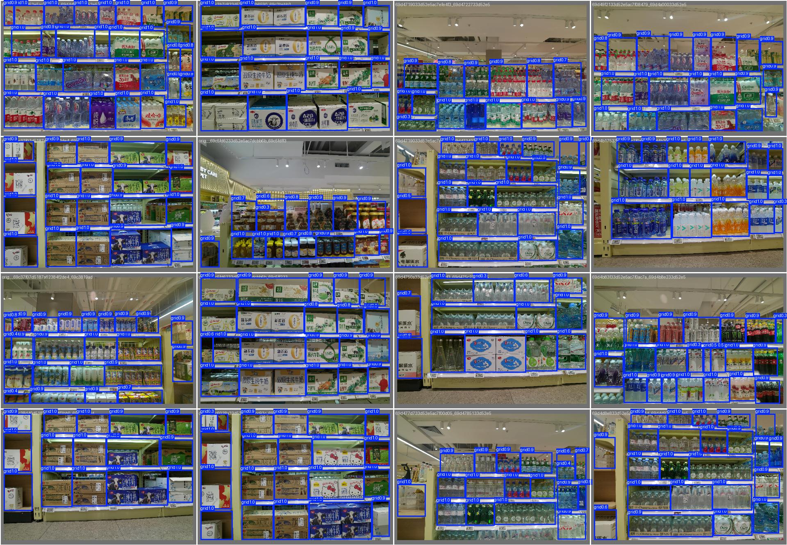
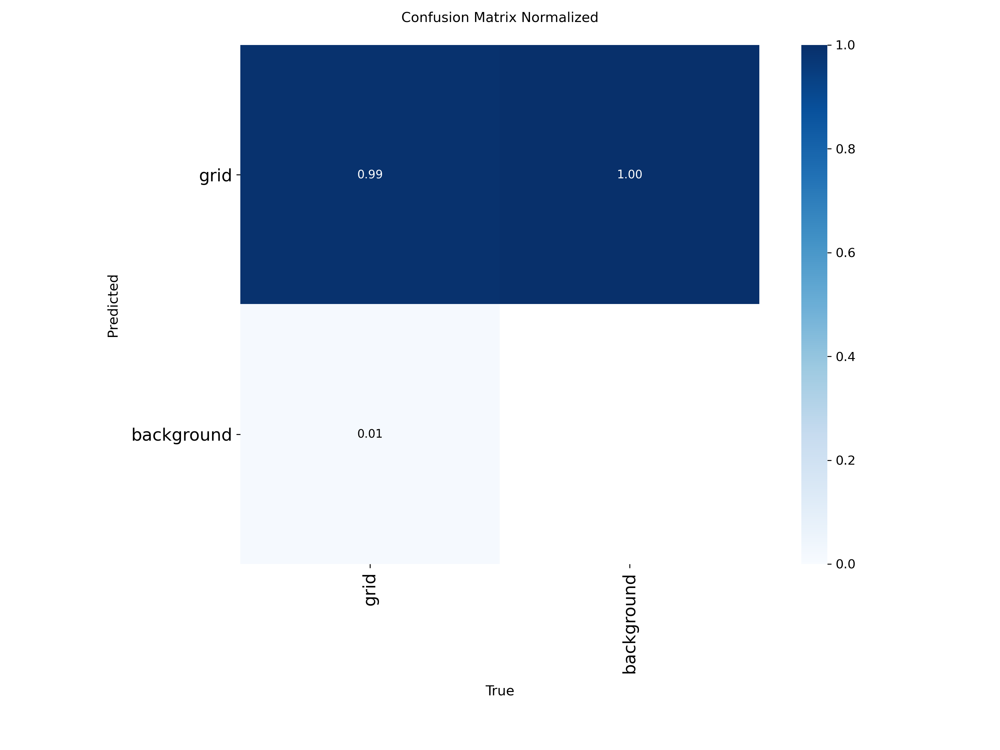
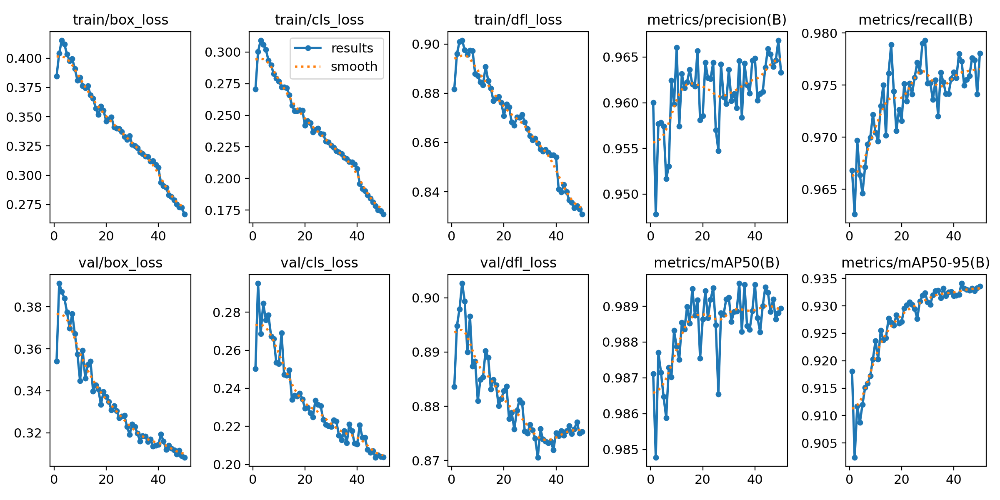
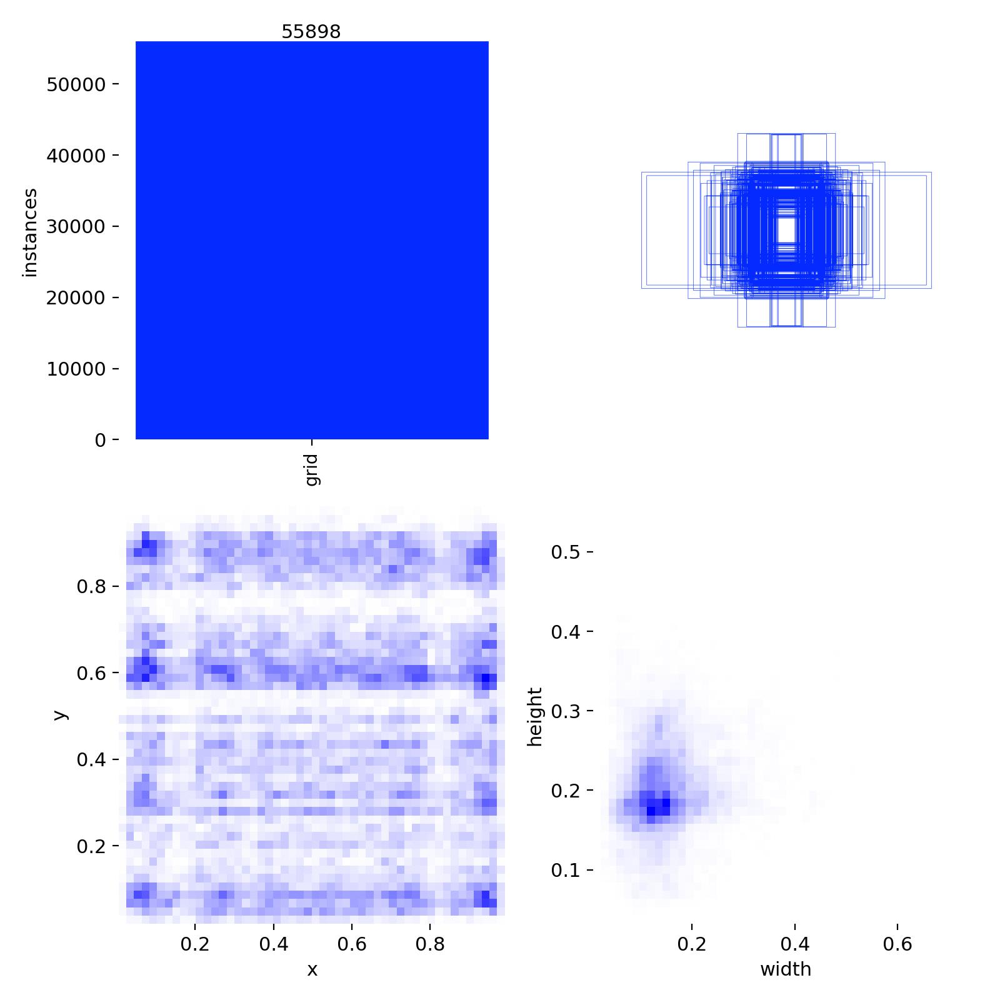
object_detection/runs/grid/…/results.csv · PROJECT_CONTEXT.md · tools/{visualization,reporting,dataset}
对比学习微调 ViT，对比 CLS / GGeM / SALAD 三种 patch 聚合，FAISS 做 1800 类以图搜图。
1800+ SKU 需精确"以图搜图"，仅用 CLS token 聚合时细粒度区分度不足。
系统对比 Group-GeM 池化与 SALAD（Sinkhorn 最优传输聚合），在难负样本上做 margin/阈值分析，选最优聚合策略。
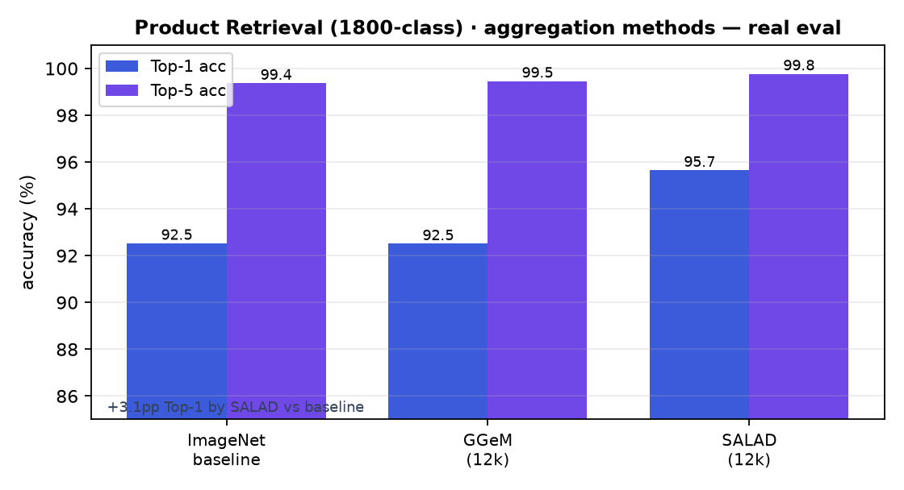
Embedding/AGGREGATION_EXPERIMENTS.md · outputs/train_1800c/comparison_report.json · outputs/analysis/*_metrics.txt
从 LLM 推理 RL，到机器人操作策略、训练基础设施与世界模型。
HuggingFace TRL · GRPOTrainer，Qwen3.5-2B + LoRA 在 GSM8K 数学题上做 RL 后训练。
用 RL 提升大模型数学推理正确率，且要在单卡上高效微调。
自写答案抽取 + 正确性奖励函数，GRPO 组内相对优势优化；LoRA 控显存，从手写分步实现到 v1→v3 迭代，实时监控 reward / KL / entropy 防崩坏。
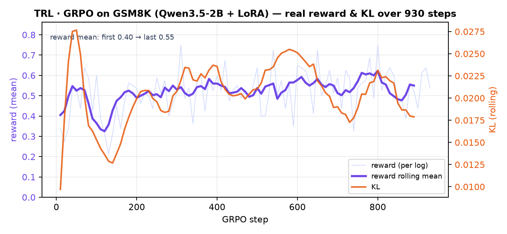
TRL/my_scripts/grpo_lora_v3.py · grpo_step_by_step.py · outputs/grpo-gsm8k-lora-v3/checkpoint-934/trainer_state.json
~450M VLA（SmolVLM2 骨干 + Flow-Matching 动作专家），LeRobot 框架，LIBERO 仿真。
模仿学得的操作策略在长程多步任务上成功率很低——正是 RL 要补的短板。
单卡 4090 在 LIBERO 200k 步训练 + 交互式实时仿真评测闭环，分套件量化定位长程失败，作为 RL 后训练目标。
SmolVLA/outputs/libero_interactive/FINAL_REPORT.md · *.mp4 · scripts/libero_interactive.py
开源 RL 框架（PyTorch Ecosystem / Isaac Lab v3 采用），支持 GRPO/PPO/SAC。
7B VLA 的 RL 微调在单张 24/48GB 卡上极易 OOM，全流程难跑通。
定位全参 GRPO OOM 根因（优化器态 ~56GB 不被 offload）→ 改 LoRA GRPO；权重同步 IPC OOM → FSDP offload + 梯度检查点；四阶段流水线脚本化 + 断点续训。
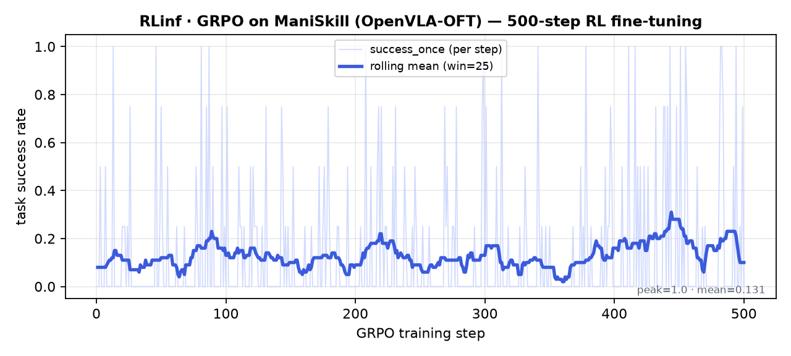
RLinf/experiment_archive/EXPERIMENT_SUMMARY.md · medium_48g/…/rlinf_grpo/metrics.log
Diffusion-Forcing 世界模型（DiT + SD-VAE latent），单卡复现 point_maze 并对齐官方指标。
真机采样昂贵，需要一个可学习的"仿真器"来支撑策略训练与规划。
在 DINO-WM 数据集上用 Diffusion Forcing 训练视频世界模型，单卡 30k 步复现，逐指标对齐官方权重验证正确性。
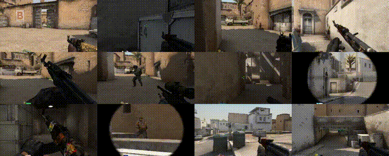
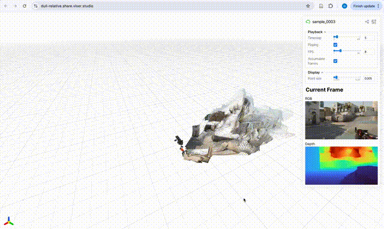
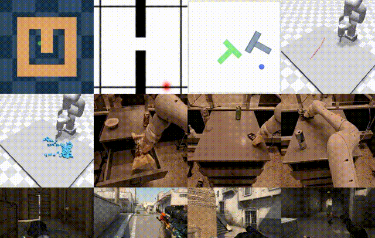
Nano World Model/REPRODUCTION_REPORT.md · assets/*.gif · results/rollout_official_ckpt/
统一多模态模型单卡复现，文生图 + 视觉问答真实样例。
单卡 24GB 复现统一"理解+生成"多模态模型，20 次真实训练/出图/理解实验并落盘留证。
验证统一多模态模型（离散扩散图 + 自回归文）在单张 24GB 卡上的可复现性。
ImageNet 文生图训练 + LLaVA 理解阶段冒烟，官方权重 vs 从零训对照，诚实记录 loss 平台与出图质量差异。
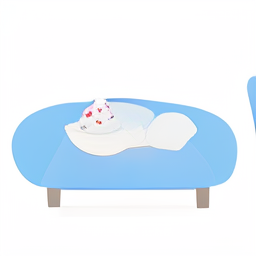
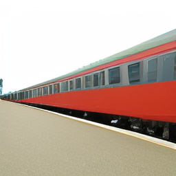
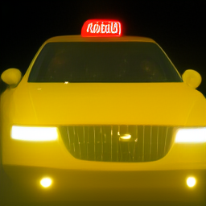
Show-o/EXPERIMENTS_24h.md（唯一事实来源）· outputs_24h/gen/quality_*/
轻量 Agent 框架二次开发，与本地大模型服务配套。
轻量开源 Agent 框架（Python + React WebUI），围绕 tool / skill 双扩展点与业务集成做二次开发。
需要一个可自托管、可扩展的轻量 Agent 框架，接入自有工具与数据落地业务场景。
理清 skills / tools 加载优先级与扩展点，开发自定义 tool+skill、数据库集成与电商订单分析工具链，并接入 MCP。
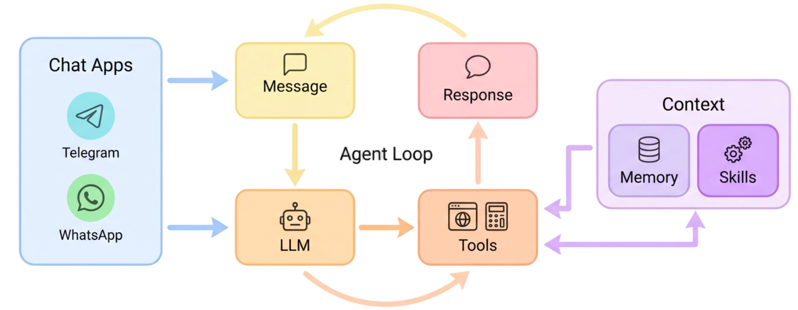
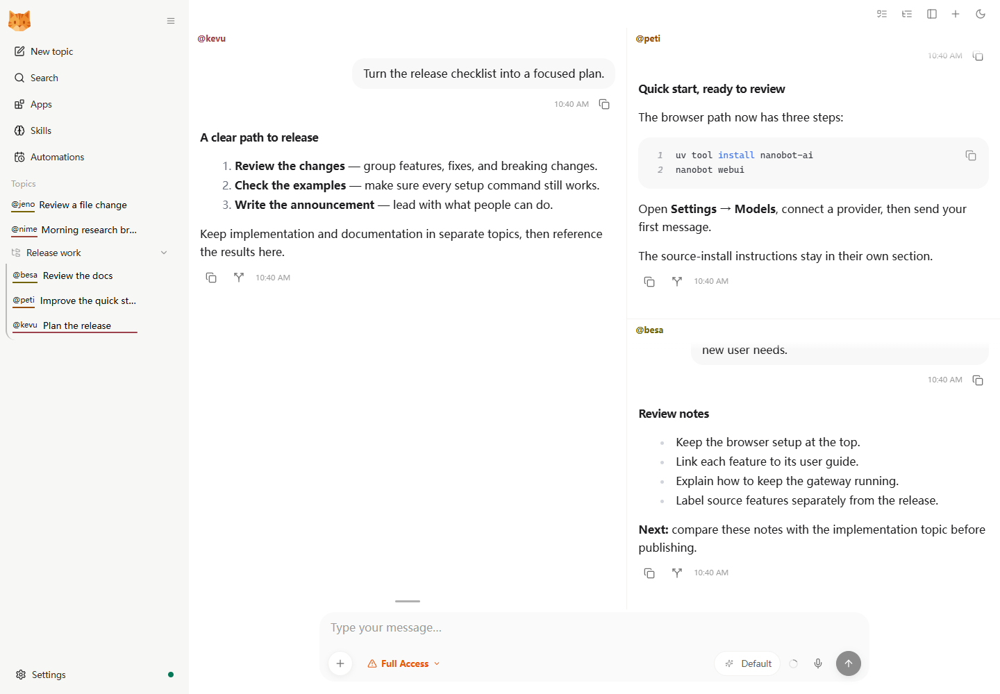
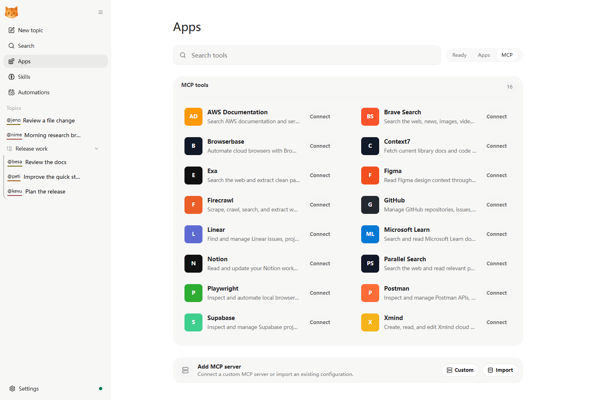
nanobot/docs/architecture.md · examples/sales-analysis-demo · nanobot/skills · agent/tools/loader.py